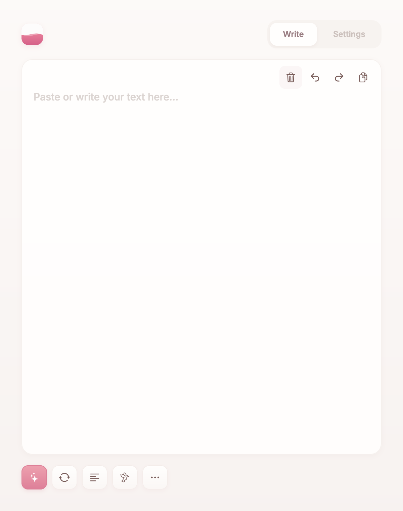

Hi, I’m Cristian. I built Polish because I wanted an easy, comfortable way to tidy up my text without spending time chatting back and forth with an AI.
Sometimes I just want to fix a few typos or find a better word. Select the text, click a button, and get back to what I was writing. That’s what I wanted Polish to be.
So this is what the app looks like. Just a text box and a couple of buttons. You’ll figure it out. You’ll need an OpenAI account and an API key, which I’m sure you can get your hands on. I recommend using a very small model.
Most of the time I don’t even open the app. It also lives in the menu bar, doing its thing on whatever you selected in whatever app you’re in. There’s a Raycast version too, for those of you who never leave the keyboard.
Also, I recommend using Polish to just get things out of the way and keep the ball rolling, but always use your own words. I know it sounds silly to say that since there’s even an infinite sentence button, but is not really for writing text but just to let you know that there’s surely more stuff to write if you put your mind to it. And if a bot can do it, so can you. Love you.
Cristian Caroli